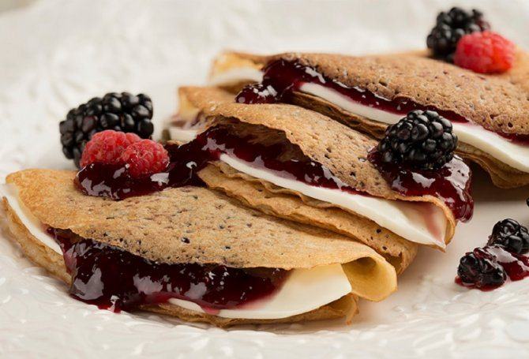

◖Coffrey◗
Crepa de zarzamora y queso
Ingredientes:
1 tza. de harina
3 cdas. de azúcar
1 pizca de sal
1 ½ tzas. de leche
2 huevos
1 cda. de esencia de vainilla
2 cdas. de mantequilla derretida
Otros:
1/2 tza. de azúcar glass para adornar
1/2 tza. de zarzamoras frescas
1/2 tza. de frambuesas frescas
Preparacion:
Licuar los ingredientes de las crepas y refrigerar por 30 minutos
Verter en un sartén caliente un poco de mezcla para crepas, extender voltear y dejar cocer.
Rellenar cada crepa con un poco de la mermelada de zarzamora, colocar Queso Crema Philadelphia® en Rebanadas y doblar en triángulo.
Servir espolvoreando un poco de azúcar glass por encima, las zarzamoras y las frambuesas
